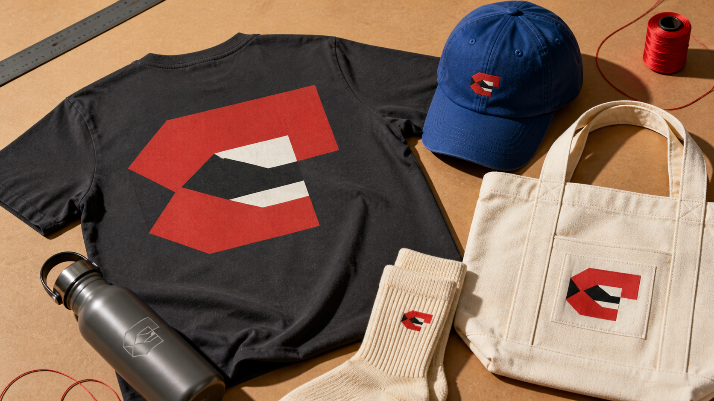
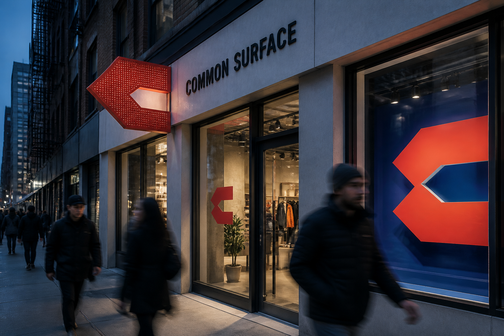
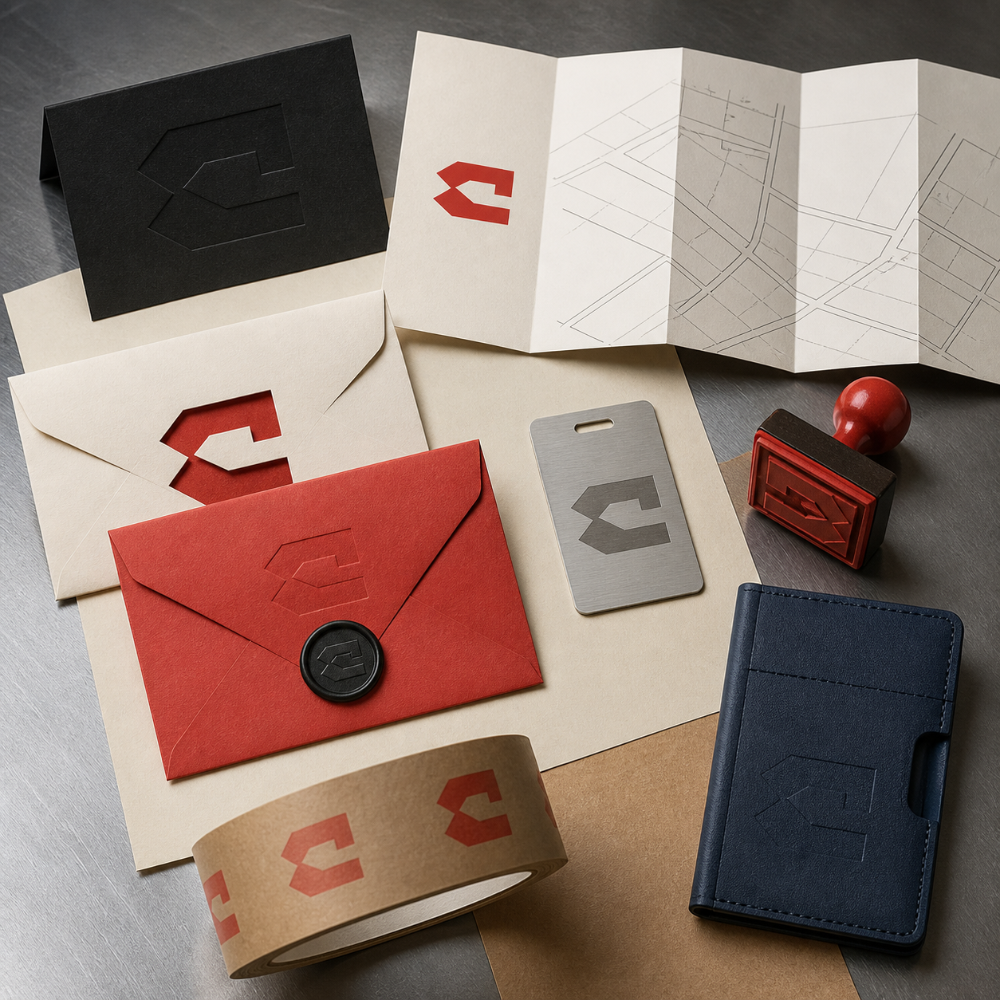
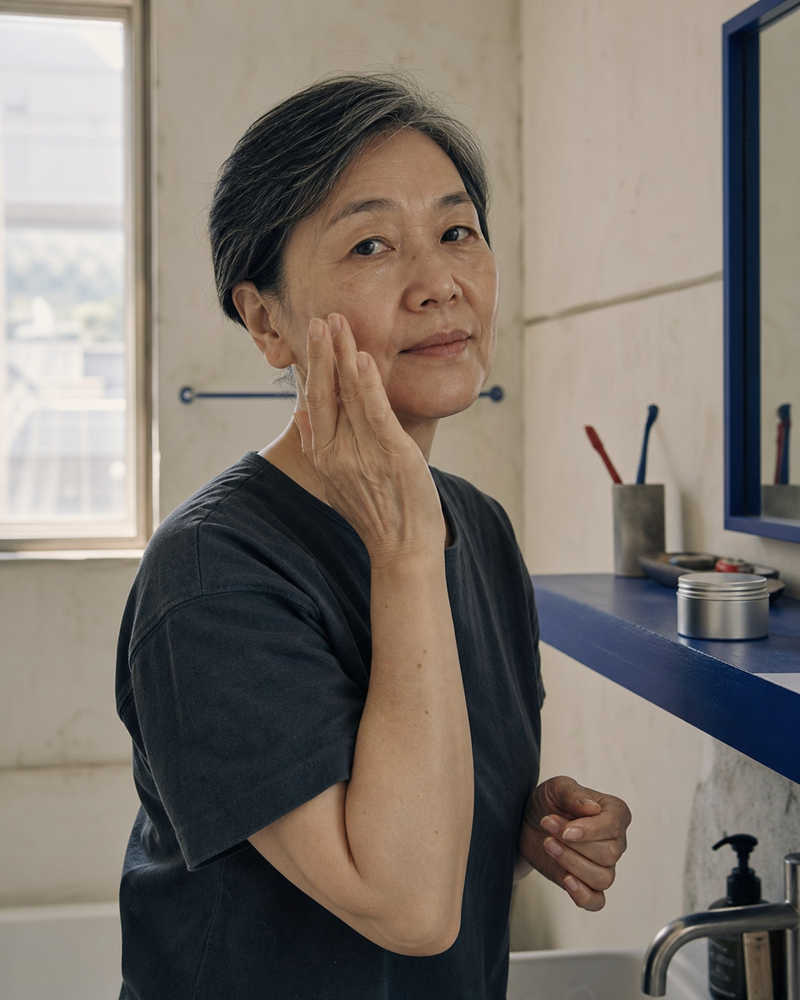
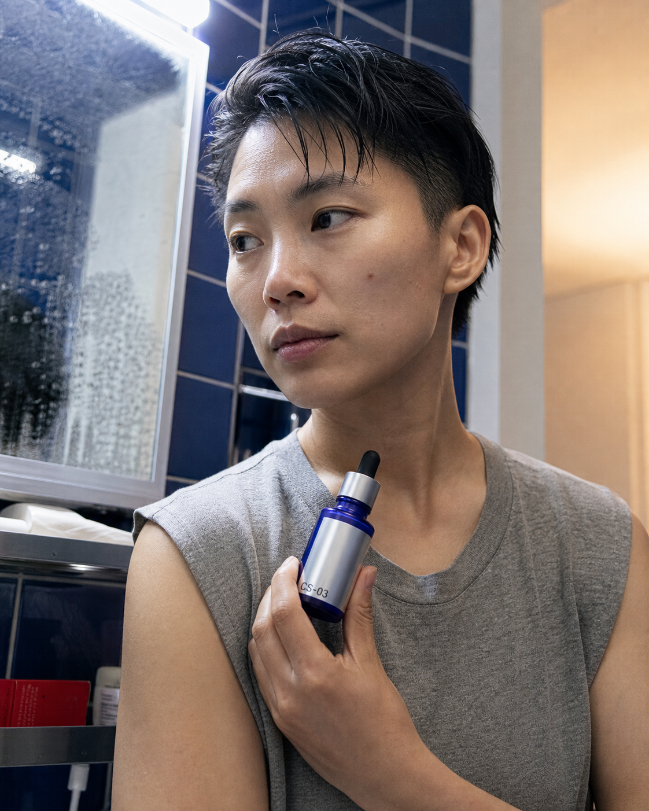
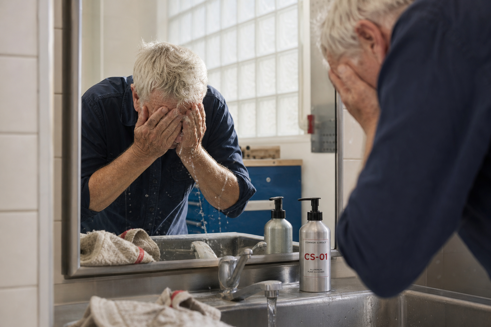
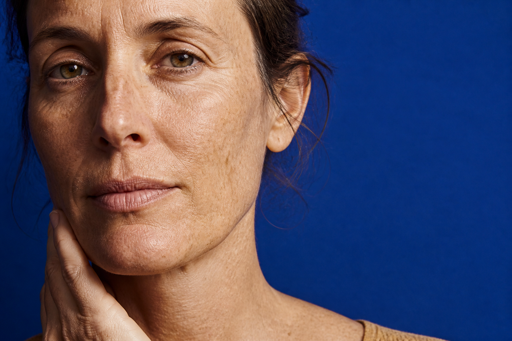
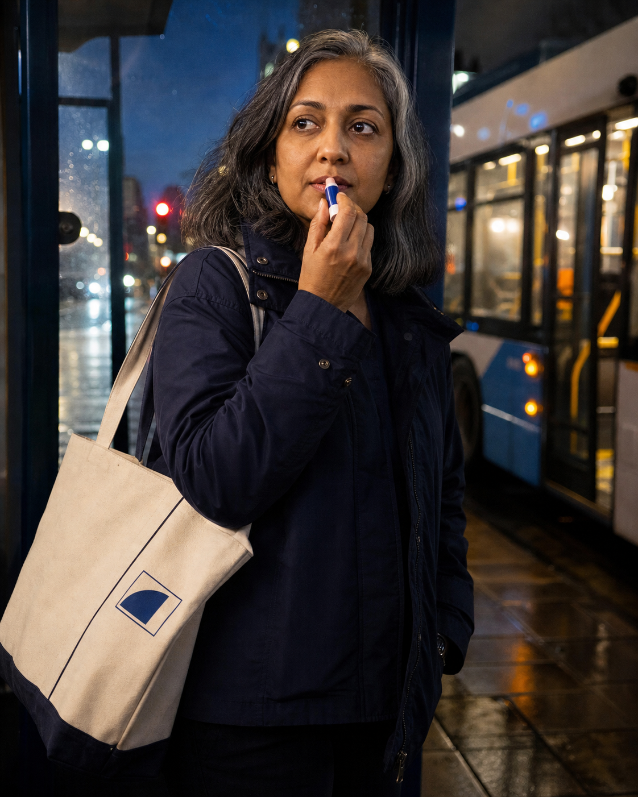
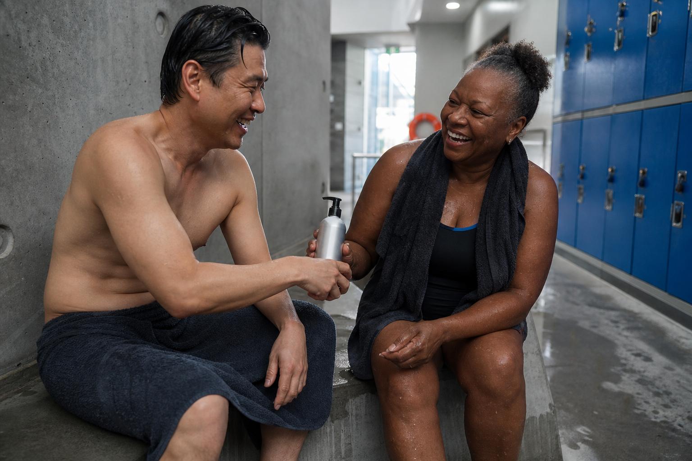
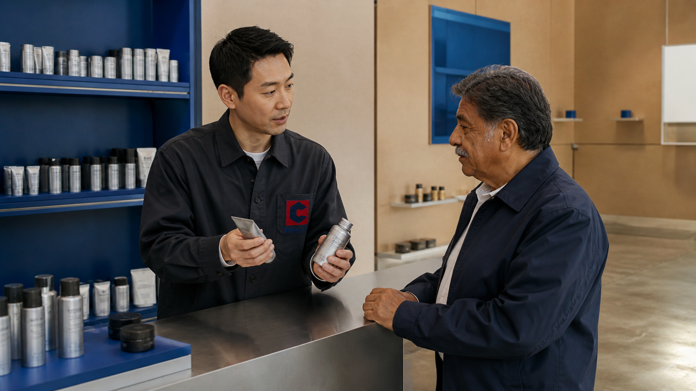

FIELD ROUTINE / 02
FIELD ROUTINE / 02두 표면이 맞물린 C/S 심벌은 이름이 읽히기 전에도 브랜드를 남긴다. 같은 형태가 화면, 자수, 타공 금속, 종이의 압흔으로 이동한다.



얼굴의 4단계에 머물지 않는다. 햇빛, 바디, 손, 입술, 두피, 운동 후, 이동 중의 루틴까지 같은 정보 구조로 확장한다.
제품을 선택하면 이 영역에서 루틴 후보가 바뀝니다. 구매·재고·개인 적합성 판단은 시작되지 않습니다.
인물의 다양성을 숫자로 채우지 않는다. 피부 질감, 나이, 성별 표현, 관계, 행동, 장소, 시간대가 서로 다른 일상의 장면으로 연결된다.







COMMON SURFACE는 피부의 결점을 교정한다는 이야기를 만들지 않는다. 사람은 제품을 증명하는 전후 사진이 아니라, 제품이 들어가는 서로 다른 삶의 주체다.
로고와 정보 체계는 배송, 의류, 매장, 서비스 도구로 이동한다. 같은 무드를 복제하지 않고 매체의 물성과 거리로 표현을 바꾼다.
제품 11종, 인물 장면 8종, 로고 응용 매체 4군. r2는 하나의 톤을 반복하는 무드보드가 아니라, 같은 원칙이 다른 표면에서 변주되는 브랜드 운영 기준선이다.